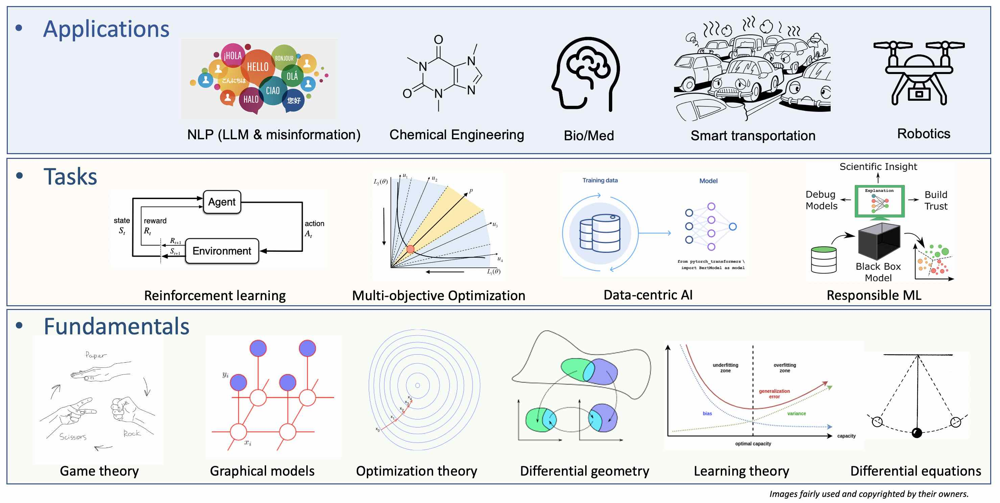

Research Projects
|
Research Overview
|
||
|
All publications can be found here
and Google Scholar.
|
||
|
 |
||
|
Responsible machine learning on graphs
|
||
|
Graphs are ubiquitous in many applications, such as molecular biochemistry, neural science, Internet, computer vision, NLP, and crowdsourcing.
Machine learning on graphs, especially with neural networks, has demonstrated prediction accuracy. However, accuracy is not the only desideratum,
and humans and society can still be negatively impacted by the models if care is not taken. For example, a model can lack of transparency so that it is hard to understand why a model make a prediction;
a model's accuracy may drop due to slight perturbations;
or an accurate model can treat different demographical groups or individuals in an unfair way.
We aim to make the models more responsible by investigating explainability, fairness, and robustness beyond accuracy of the models.
(i)
On large graphs, power-law degree distributions are common and can lead to fairness issues in the graphical models and affect end-users.
We propose a linear system to certificate if multiple desired fairness criteria can be fulfilled simultaneously, and if not,
a multi-objective optimization algorithm to find Pareto fronts for efficient trade-offs among the criteria
[CIKM2021]).
To reduce optimization cost, the team proposes continuous Pareto front exploration
by exploiting the smoothness of the set of Pareto optima.
As graphs can contain hidden factors to complicate fairness issues,
we simultaneously learn a fair models and identify such hidden factors to mitigate the issues
[KDD2023]).
(ii)
Graphical models can be hard to understand by human users due to multiplexed information propagations over many edges.
The team published a series of works addressing challenges in making graphical models more interpretable,
such as
large discrete search space
[ICDM2019]),
axiomatic attribution
[CIKM2020]),
multi-objective explanations
[ICDM2021a]),
and differential geometric for interpretating nonlinear graph evolution
[ICLR2023]).
(iii)
Robustness can be interpreted broadly as maintaining any desired properties under reasonably slight perturbations.
We provide robust explanations through self-supervision and constrained optimization
[ICDM2021b]),
and robust optimization, statistical theory, and optimization convergence analysis
[ICML2023])
|
||
|
Data-Centric AI
|
||
|
Data-centric AI, in contrast to model-centric AI, studies challenges on the data consumed by AI models.
One example is the alignment algorithms used for fine-tuning LLM using human-annotated datasets,
where the cost of collecting high quality datasets becomes higher as models become larger;
as another example, training robots to navigate in a 3D world needs a large number of annotated 2D and 3D images.
We study three problems.
(i)
Data quality can be improved by ensembling multiple sources.
We target at fusing multiple human data annotators and/or predictive models,
with structured output such as sets, rankings, and trees.
The challenges are to gauge the individual model's performance
and to take into account the extra knowledge of the output space.
Please check
out these three papers
[ICDM2013,
DSAA2015,
CIKM2016a]
along with others
[SDM2012,
KDD2014,
SDM2015b].
Along with Dr. Qi Li from Iowa State, we extended the framework to address fusion problem on sequential data found in natural language processing
[ICDM2021].
(ii)
To reduce annotation cost, we use reinforcement learning to explore the unlabeled data for active annotation.
Since finding an optimal data selection strategy needs labeled data, which do not exist before one start annotating, we adopt meta-bandit to learn an optimal strategy while annotating the data
[CIKM2020].
In certain cases, label spaces can be too large for annotation and selectively annotating data-label pairs can be useful
[CIKM2016b,
SDM2016a].
Active annotations can be extended to structured data, such as sequential texts and general graphs (termed "structured annotations")
[UAI2023].
(iii) Errors are ubiquitous in data-centric AI, and understanding how errors impact the whole pipeline of training AI model is important for correction and improve AI responsibility. We are using conformal prediction on graphical models to quantify uncertainty and its impact on the final models.
|
||
|
Misinformation detection
|
||
|
Online contents hosted on Twitter (now X), Yelp, Amazon, etc. are full of opinionated information that can significantly influence audience's decision making.
For example, during the COVID pandemic, information about vaccines can significantly influence the rate of vaccinations; dishonest entities have adopted unethical or even illegal strategies by paying spammers to post fake reviews (opinion spams) to promote or demote the targets businesses and producs.
Such activities lead to trust crisis of the online contents.
To address the issue, misinformation detection is necessary.
We've adopted propagations over networks
[ICDM2011],
temporal patterns
[KDD2012],
text features
[DSAA2015] and
multi-source data
[BigData2016a,
BigData2015,
TKDE2023
]
Misinformation detectors are also constantly under attack of adversarial spammers in a changing environments and robust detectors
are critical
[BigData2018,
KDD 2020].
Besides robustness, we study interpretable and fair detection
[BIGDATA2016a
[IJCNN2023]
[KDD2023].
With the recent advance in LLM, our next target is studying how LLM can threat and/or help existing detection methods.
|
||
|
|
||
|
|
Funding
|
We are thankful to following funding agencies for their support to our research.
|
||
|
|
||

|